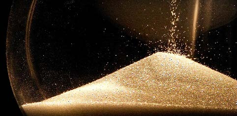

Continuum-inspired methods for modeling flowing grains
Monday, February 24, 2020
12:00-13:00, 3110 Etcheverry Hall
( Department of Mechanical Engineering, MIT )
Abstract:
Granular materials are common in everyday life but are historically difficult to model. This has direct real-world ramifications owing to the prominent role granular media play in multiple industries and in terrain dynamics. One can attempt to track every grain with discrete element methods (DEM), but realistic systems are often too large for this approach and a continuum model is desired. However, granular media display unusual behaviors that complicate the continuum treatment: they can behave like solid, flow like liquid, or separate into a "gas", and the rheology of the flowing state displays remarkable subtleties. To address these challenges, in this talk we develop a family of continuum-based approaches, permitting quantitative and efficient modeling capabilities for a variety of applications, ranging from general problems to specific techniques for intrusion, impact, driving, and locomotion in grains.
To model intrusion forces on submerged objects, we will show, and explain why, many of the experimentally observed results can be captured using a simple tension-free frictional-based rheology. This approach gives way to some surprisingly simple general tools, including a broad set of scaling laws inherent to the problem of granular locomotion. These scalings are validated experimentally and in discrete particle simulations, suggesting a new down-scaled paradigm for granular locomotive design, on earth and beyond, to be used much like scaling laws in fluid mechanics. Due to its simplicity, the frictional plastic model cannot always be trusted, particularly when faced with particle-scale phenomena such as clogging, bouncing, and ballistic motion. To address this, we propose a discrete-continuum hybrid simulation approach, where an "oracle" algorithm dynamically partitions the domain into continuum regions, where simple continuum modeling is safe, and discrete element regions where necessary. This approach accurately and efficiently simulates scenarios that previously required an entirely discrete treatment. Finally, we discuss a technique for fluid-submerged granular flow problems, which treats the granular phase and the fluid phase as two separate, yet coupled continuum bodies. This methodology is shown able to replicate experimental results for saturated granular flows over a range of conditions and dilutions, and can be extended to account for more obscure effects, such as those giving rise to shear-thickening suspensions.
|  |
Bio: Ken received a BS in Engineering Physics at UC Berkeley in 2003 and a PhD in applied mathematics from MIT in 2008. In 2011, Ken joined the faculty of the department of Mechanical Engineering at MIT, and shortly thereafter received an appointment as the Class of 1956 Career Development Chair. He was awarded the NSF CAREER Award at the end of 2012 and won the 2015 Eshelby Mechanics Award for Young Faculty, cited for "fundamental contributions to mechanics of granular media". In 2016 Ken won the Journal of Applied Mechanics Award for work on Eulerian-frame fluid-solid computational modeling, as well as the Ruth and Joel Spira Teaching Award from the MIT School of Engineering. He was named the Annual Speaker for the Danish Center for Applied Mathematics and Mechanics in 2018.